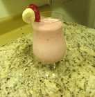

8-19-2012
Strawberry and Banana Smoothie
This smoothie is delicious, refreshing, and makes an excellent breakfast or a healthy late night snack. Strawberries contain dietary fiber which helps regulate digestion, as well as elements which help to build strong bones. The bananas provide an energy boost for your body and mind. Whether you make this smoothie with milk or juice it's going to be a delicious and nutritious addition to your day!
Note: This recipe makes one serving.

Ingredients:
- Frozen Strawberries
- 1/2 of a Frozen Banana
- Fat-free Milk or Juice
- Sugar or Agave Syrup
- Vanilla Extract
Directions:
- Cut your frozen banana in half.
- Peel the half of the banana that will go into the smoothie, return the other half to the freezer.
- Chop the banana into pieces and place them into the blender.
- Take a large handful of frozen strawberries, slice them, and add them to the blender.
- Using a small cereal spoon, add one large spoonful and one small spoonful of sugar or agave syrup into the blender.
- Add one capful of vanilla extract into the blender.
- Pour your milk into the blender until it is covering about 2/3 of the frozen fruit.
- Use the smoothie setting on the blender and wait roughly 3 minutes while it blends. If it's not blending after a minute add a small amount of milk.
- Pour into a glass and Enjoy!


.png)


Check here for more great recipes!